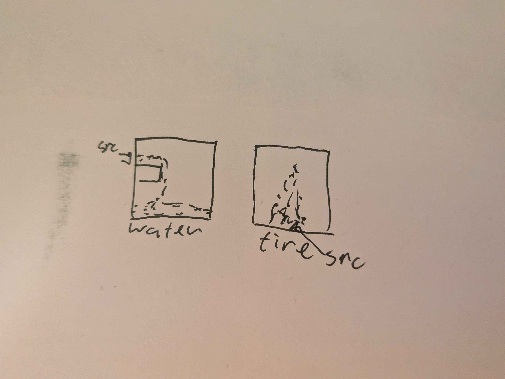

I would like to implement a basic 2D particle simulation. I would like it to run in real time. I plan to accomplish this by writing it in shader language. I want to have some basic features like obstacles. To make it interesting to look at I want to implement water and fire particle types and have some demo scenes showing them moving dynamically. I will be working on the project alone.
To make computation efficient, I want the update of the physics simulation to be made on the GPU. This of course introduces the complication of architecting this update step. I will have to do some more thinking and reading to determine what sort of representation I want to use for the particles and what sort of algorithm (scatter vs gather) to update them in parallel with a shader. Once this is complete, making versions for water and fire type particles should be pretty straightforward.
The end goal will just end up as a fragment shader that uses UV coordinates to render a depiction of the simulation to a box. I’d like to have an OpenGL window that shows a couple demo scenes of this simulation working.
